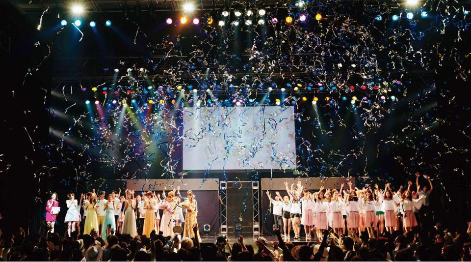
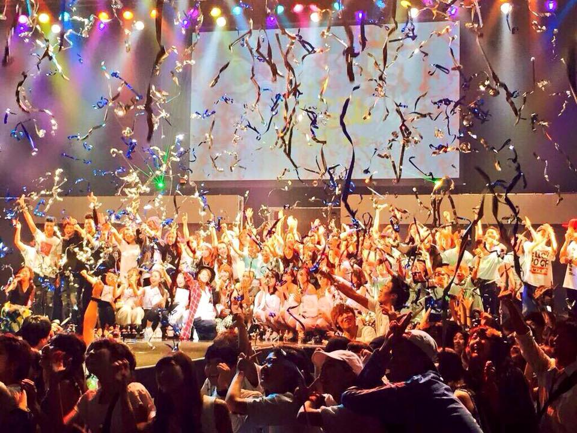
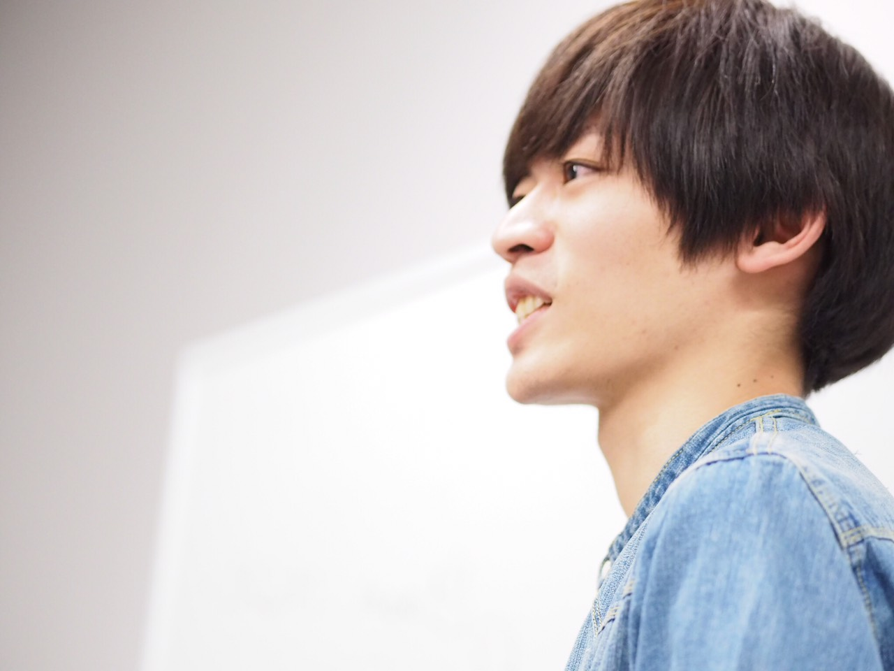
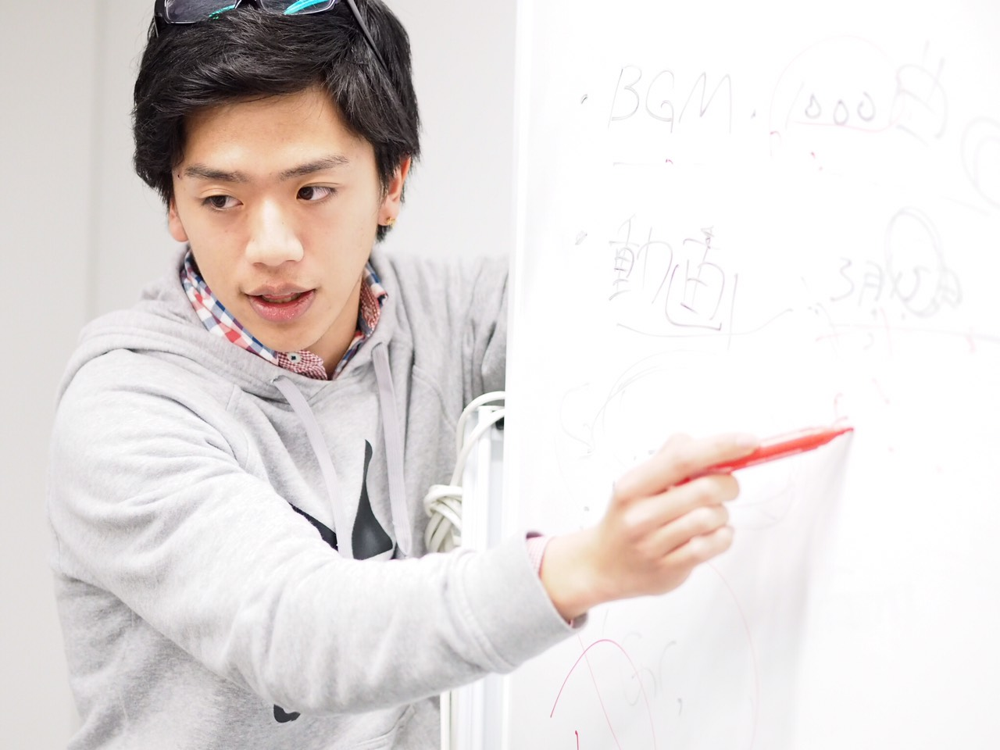
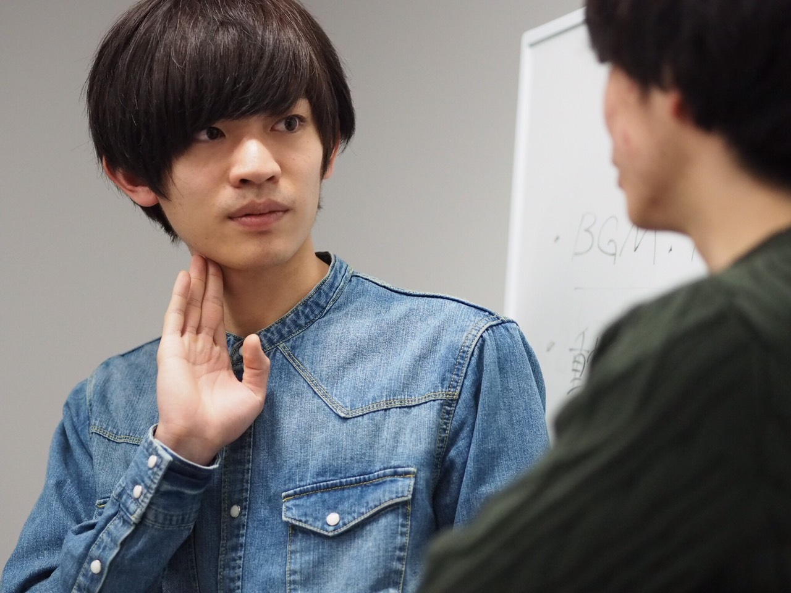
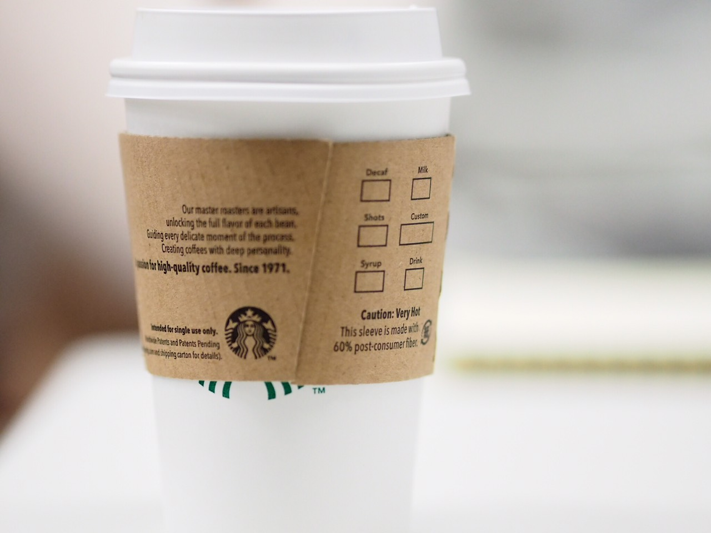

<!DOCTYPE HTML>
<html lang="ja">
<head>
  <title>Campus Collection in Tokyo</title>
  <meta charset="utf-8">
  <meta name="viewport" content="width=device-width" >
  <style type="text/css">
  </style>

  <link rel="stylesheet" type="text/css" href="./css/style.css">
  <link rel="stylesheet" type="text/css" href="./css/normalize.css">
  <link rel="stylesheet" href="http://maxcdn.bootstrapcdn.com/font-awesome/4.3.0/css/font-awesome.min.css">

  <link href='https://fonts.googleapis.com/css?family=Pathway+Gothic+One' rel='stylesheet' type='text/css'>
  <link rel="stylesheet" href="./css/slicknav.css" />
  <script src="スクリプト/jquery.slicknav.min.js"></script>
  <script type="text/javascript" src="スクリプト/jquery-2.1.4.min.js"></script>
  <script type="text/javascript" src="スクリプト/scroll.js"></script>
  <script>
	$(function(){
		$('#dropmenu').dropmenu({
      label:'',
    });
	});
</script>
</head>
<body id="contents">
  <div class="top">
    <ul id="dropmenu" class="dropmenu">
      <li><a href="#">HOME</a></li>
      <li><a href="#busyo">DEPARTMENT</a>
        <ul>
          <li><a href="./section/department.html#kikaku-link">企画</a></li>
          <li><a href="./section/department.html#kouhou-link">広報</a></li>
          <li><a href="./section/department.html#seisaku-link">制作</a><li>
        </ul>
      </li>
      <li><a href="#daihyo">MESSAGE</a></li>
      <li><a href="#contact">CONTACT</a></li>
    </ul>
    <h1>CampusCollectionTokyo2016<br>staffpage</h1>

    

  </div>


  <dix class="what-wrapper">
    <h2>What's Campus Collection?</h1>
    <div class="what-img">
      
    </div>

    <div class="what-text" id="explanation">
      <p>通称"キャンコレ"は大阪で10年続くファッションショーイベントで、10周年を迎える今年、東京に初進出します！
少しでも運営スタッフやモデルに興味のある方、是非やってみませんか？スタッフでもモデルでもやれば絶対大きな財産になります！！
さらにここ東京では初の開催のため、これからのキャンコレ東京のスタートアップメンバーになれます。一から作り上げるので、確かなスキルが身につくのはもちろん、楽しい仲間がたくさんできます！<br>
最高の仲間と一緒に、この夏一番のイベントを立ち上げませんか？
新1年生を含む全ての大学生、専門学生でやってみたいと思った方は下記の応募フォームからお申し込みください！


      </p>

    </div>

  </dix>

  <div class="daihyo-wrapper" id="daihyo">
    <h2>MESSAGE</h2>
    <div class="daihyo-img">
      
    </div>
    <div class="daihyo-text">
      <p>僕がキャンコレに入ってくれるスタッフに感じて欲しい 最大の魅力とは「環境の変化」です。 大学生活が180度変わると確信しています。 キャンコレが関西最大級であり続けるか限り 普段の学生生活では絶対に出会えなかった人達と出会えます。 10年という歴史の仲間達、夢中になれる環境に挑戦する機会を キャンコレは必ず自分と引き合わせてくれます。 そんな出会いがもたらせてくれる、やりたいことや発信したいことは 5000人のお客さんや、その向こうにいる62万人の関西の学生にきっと届く！ まずは第一歩、勇気をもって踏み出せば道は無限に広がります。
 <br>キャンパスコレクション2016代表　吉田 博貴</p>
    </div>


  </div>

  <div class="busyo-wrapper" id="busyo" >
    <h2>DEPARTMENT</h1>

        <div class="works-wrapper">
          <a href="./section/department.html#kikaku-link" class="work-box tree">
            
            <div class="work-description">
              <div class="work-description-inner">
                <p class="kyoku-title">企画局</p>
                <p class="work-text">
                  キャンコレのコンテンツ内容を企画していきます。<br><br>
                  こんな人におすすめ：<br>企画に興味がある方、0から仲間と何かを作りあげてみたい方<br>

              </div>
            </div>
          </a>
          <a href="./section/department.html#kouhou-link" class="work-box building">
            
            <dic class="work-description">
              <div class="work-description-inner">
                <p class="kyoku-title">広報局</p>
                <p class="work-text">
                  東京ではまだまだ認知度が低いキャンコレを、SNS等を使って誰もが知っているキャンコレにしてもらいます<br><br>
                  こんな人におすすめ：<br>マーケティングに興味がある方、twitter等で情報発信が好きな方<br>

                </p>
              </div>
          </dic>
        </a>
          <a href="./section/department.html#seisaku-link" class="work-box lake">
            
            <dic class="work-description">
              <div class="work-description-inner">

                <p class="kyoku-title">制作局</p>
                <p class="work-text">
                  キャンコレで使う動画、写真、Webページ、フライヤーなどを作ってもらいます<br><br>
                  こんな人におすすめ：<br>物作りに興味がある方、デザイナー・エンジニア志望の方<br>

                </p>
              </div>
            </dic>
          </a>
        </div>

  </div>

  <div class="contact-wrapper" id="contact">
    <div class="contact-text">
      <h2>CONTACT</h2>
      <h3>募集要項</h3>
         <p>成し遂げたいことを頑張れる環境をスタッフに与える ことが、キャンコレのミッションだと考えています。<br>
          そんな挑戦と成長意欲のある学生の応募を待っています。<br>応募は"スタッフに応募する"からフォームに従って記述してください。
          <br>合わせてモデルの募集も行っているので興味ある方、お友達を推薦したいという方も是非お問い合わせください。<br>お問い合わせは　Mail　よりお願いします。
      </p>
      <p>時間<br>毎週木曜日19:00〜<br><br>場所<br>株式会社 CIN GROUPE <br>〒150-0002 東京都渋谷区渋谷3-12-22　渋谷プレステージ5F<br>TEL : 03-6418-5433<br>Mail : camcolle.tokyo@gmail.com
      </p>
    </div>
  </div>

    <div class="info-wrapper">
      <div class="info-contents">
        <div class="info-box" >
          <a href="mailto:camcolle.tokyo@gmail.com?subject=キャンコレお問い合わせ&amp;body=本文を入力してください">
            <i class="info-icon fa fa-envelope-o"></i>
            <a class="info-title">Mail</a>

          </a>
        </div>

        <div class="info-box" >
          <a href="https://www.google.co.jp/maps/place/%E3%80%92150-0002+%E6%9D%B1%E4%BA%AC%E9%83%BD%E6%B8%8B%E8%B0%B7%E5%8C%BA%E6%B8%8B%E8%B0%B7%EF%BC%93%E4%B8%81%E7%9B%AE%EF%BC%91%EF%BC%92%E2%88%92%EF%BC%92%EF%BC%92+%E6%B8%8B%E8%B0%B7%E3%83%97%E3%83%AC%E3%82%B9%E3%83%86%E3%83%BC%E3%82%B8/@35.6563906,139.7035357,17z/data=!3m1!4b1!4m2!3m1!1s0x60188b5bee41b7fb:0x70f128608cb7102a">
            <i class="info-icon fa fa-map-marker"></i>
            <a class="info-title">Access</a>

          </a>
        </div>
      </div>
    </div>

    <footer>
      <div class="footer-button">
        <a class=""  href="https://docs.google.com/forms/d/1KkX7C8EiXkfujf1L6DVtNL-vGSoLl8YIukD9K4B5xkQ/viewform">スタッフorモデルに応募する</a>
      </div>
    </footer>


</body>
</html>
